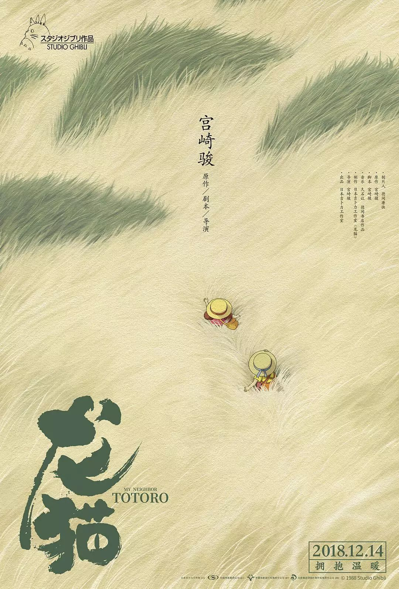

HOME

Totoro: My Neighbour
《龙猫》
(1988)
《龙猫》是由吉卜力工作室与德间书店制作，宫崎骏执导。在1988年4月16日首映的日本奇幻动画电影。电影的故事背景设定于1958年（昭和33年），讲述了一位教授的两个的女儿意外在乡村与友好的森林守护者“龙猫”互动的故事。在日本专注经济高度发展前存在的美丽自然，只有孩子能看见不可思议世界和丰富的想像及探索泛灵论、神道教符号学、环境保护主义和乡村生活的乐趣等主题，也唤起观众的乡愁和受大众欢迎。
《龙猫》在1988年获得了Animage动漫大奖、每日电影奖和电影旬报十佳奖等奖项。同时还获得蓝丝带奖特别奖。这部电影被公认为日本动画最顶级的动画电影之一，在2010年《帝国杂志》的“世界100部最佳电影”中，《龙猫》排名第41位并在 2012 年被评选为史上最伟大动画电影中排名最高。这部电影及同名角色已成流行文化的偶像并在吉卜力工作室的许多电影和电子游戏多次客串。龙猫也是工作室的吉祥物并被公认为日本动画中最受欢迎的角色之一。